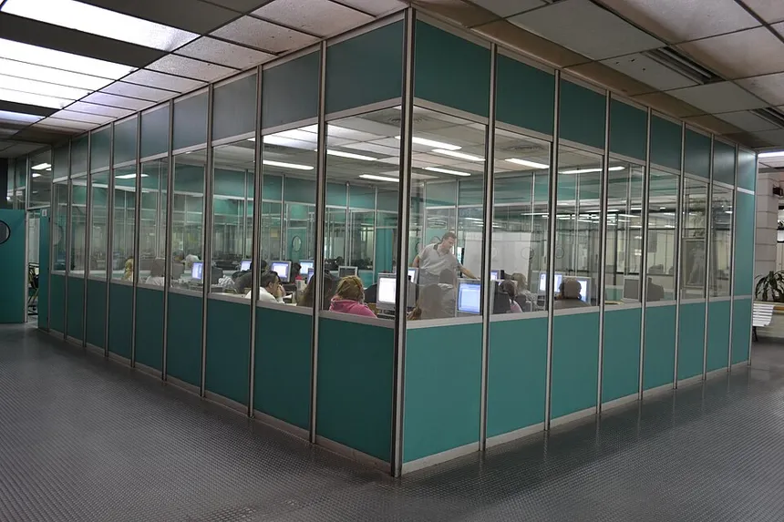
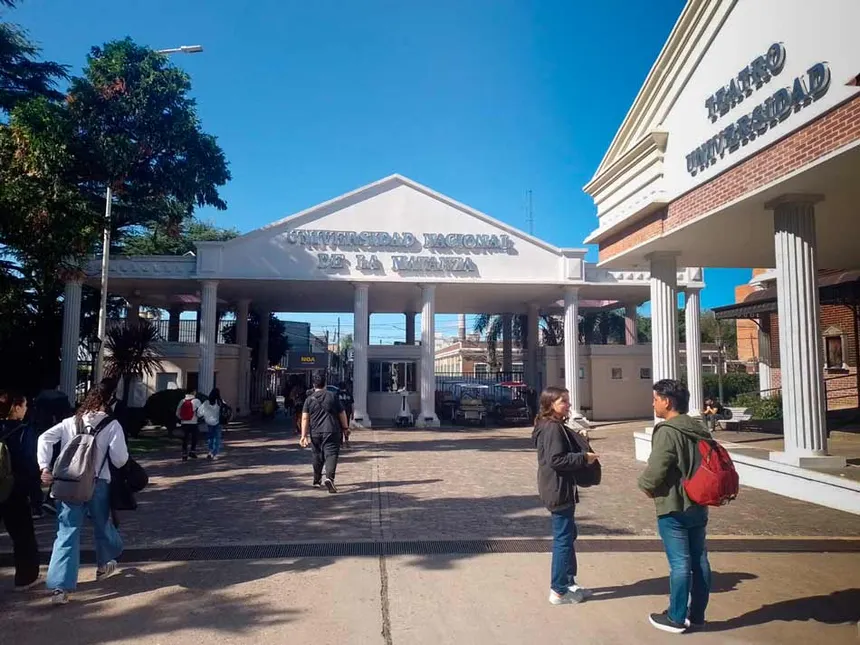

Universidad Nacional de la Matanza
Titulo Adquirido
Técnico en Desarrollo Web
- Ingreso: 2024
- Egreso: 2030
Conocimientos Adquiridos
Durante la carrera de Desarrollo Web en la Universidad Nacional de La Matanza adquirí una formación integral en programación y desarrollo de sitios y aplicaciones web. A lo largo de la cursada trabajé con tecnologías como HTML, CSS y JavaScript, además de aprender sobre bases de datos, diseño de interfaces y desarrollo tanto frontend como backend. Gracias a esta formación, desarrollé habilidades para crear páginas web completas, resolver problemas técnicos, trabajar en equipo y adaptarme a nuevas herramientas y tecnologías del mundo digital.

